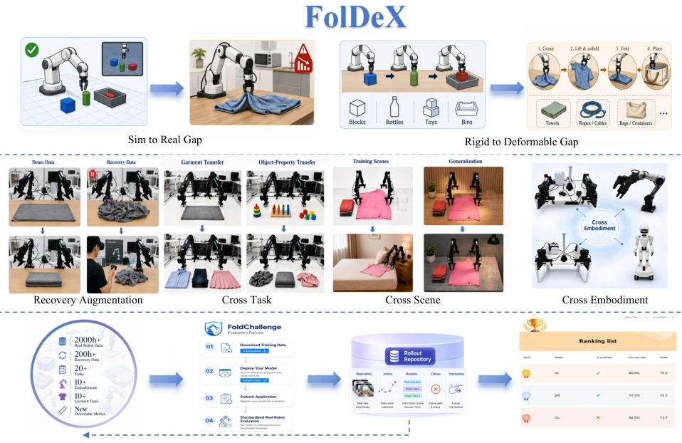
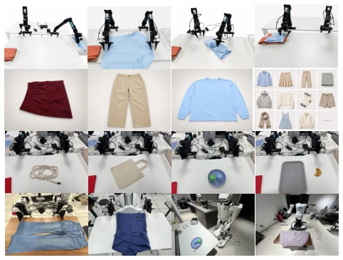
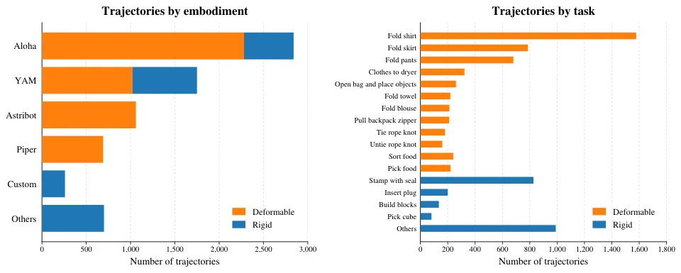

This paper is less about proposing new algorithms and more about setting "rules" for the embodied AI community. FolDeX attempts to fill the benchmark gap for long-horizon deformable object manipulation on real robots, which is indeed a pain point, as folding clothes in simulation and on real machines are completely different species. But the authors also admit that cross-arm transfer and cross-task transfer currently perform poorly, even exhibiting catastrophic forgetting, indicating that data reuse is far from as good as imagined. FoldScore introduces flatness and time, which is more reasonable than a simple Success Rate, but manual scoring still relies on human labor. Overall, this is solid "infrastructure" work, but do not expect it to directly solve the model generalization problem; it merely exposes the issues more clearly, while also highlighting the huge challenges of current real robot data reuse.
研究动机Motivation
具身智能最终要在物理世界验证，但仿真到真实的差距（Sim-to-Real）和刚性到可变形物体的差距（Rigid-to-Deformable）依然巨大。现有基准如 RoboChallenge (Yakefu et al. 2025) 多关注短周期刚性任务，而 SoftGym (Lin et al. 2021) 和 GarmentLab (Lu et al. 2024) 侧重仿真。真实机器人数据昂贵，且不同场景、机械臂间的数据难以复用。论文指出，缺乏统一的物理评估协议导致结果不可复现，比如同样的 π0 模型在不同设置下表现差异巨大。因此，需要构建一个专注于长周期可变形操作（如衣物折叠）的真实机器人基准，以标准化评估并研究数据复用，解决当前评估标准不一、难以横向对比的问题。
Embodied AI must ultimately be validated in the physical world, but the gap from simulation to reality (Sim-to-Real) and from rigid to deformable objects (Rigid-to-Deformable) remains huge. Existing benchmarks like RoboChallenge (Yakefu et al. 2025) mostly focus on short-cycle rigid tasks, while SoftGym (Lin et al. 2021) and GarmentLab (Lu et al. 2024) focus on simulation. Real robot data is expensive, and data across different scenarios and robots is difficult to reuse. The paper points out that the lack of a unified physical evaluation protocol leads to irreproducible results, such as the same π0 model showing huge performance differences under different settings. Therefore, there is a need to build a real robot benchmark focusing on long-horizon deformable operations (such as clothing folding) to standardize evaluation and study data reuse, solving the current problem of inconsistent evaluation standards and difficulty in horizontal comparison.
FolDeX contains 2000+ hours of real robot data, covering 20+ tasks and 10+ robots (such as Aloha, Franka). The core is the FoldChallenge evaluation platform, providing standardized task definitions, control initialization, and execution protocols. Data is organized by four axes: 1) Recovery axis: utilizing human intervention and recovery data augmentation strategies during deployment; 2) Cross-task axis: studying task transfer from rigid to deformable, and between different clothing categories; 3) Cross-scene axis: scene generalization under lighting, background, and layout changes; 4) Cross-embodiment axis: transfer between different kinematics and control interfaces. Evaluation metrics include success rate, completion time, flatness score, and the comprehensive FoldScore. The baseline model adopts π0 (Black et al. 2024) combined with Real-Time Chunking (RTC) technology during training, to simulate inference latency and improve real-time performance. Observation interfaces include dual wrist eye-in-hand cameras, external cameras, language instructions, and proprioception; the policy predicts end-effector trajectories. Flatness scores are divided into 0-5 levels, independently evaluated by humans to ensure objective quality metrics.

Figure 1: FolDeX and the FoldChallenge. FolDeX organizes real-robot data along recovery augmentation, task, scene, and embodiment axes. These diagnostic tracks standardize how future methods can study robustness and data reuse by holding the target evaluation protocol fixed while varying either the available training data or the test distribution. FoldChallenge executes externally submitted policies under a standardized physical protocol and reports component-wise metrics with auditable rollout videos.

Figure 2: Overview of FolDeX. Rows show, from top to bot- tom, the major stages of a long-horizon folding task, garment categories, other deformable- and rigid-object manipulation tasks, and the robotic embodiments and scenes.
Experiments validate the four research axes. In baseline comparisons, the RTC single-task strategy had the highest average success rate (82.5%), while the RTC multi-task strategy had the highest FoldScore (75.59). After adding recovery data, the average success rate increased from 80.75% to 95.00%, and FoldScore increased to 82.53, proving that recovery data is crucial for long-horizon tasks. Preliminary experiments on cross-task, cross-scene, and cross-arm show that direct mixed training or continual training leads to action space interference or catastrophic forgetting, especially with poor cross-arm transfer performance. This indicates that heterogeneous real robot data cannot be simply reused, requiring more fine-grained data partitioning and evaluation protocols. Additionally, π0.5 performs well in pre-flattened states, but is inferior to π0+RTC on complete long-horizon tasks, indicating that task integrity significantly impacts evaluation.

Figure 3: FolDeX embodiments and data composition. The benchmark contains 2,000+ hours of real-robot experience spanning 20+ tasks and 10+ robotic embodiments. The statistics summarize the distribution of garment-manipulation tasks, other deformable-object tasks, rigid-object tasks, and robotic embodiments.